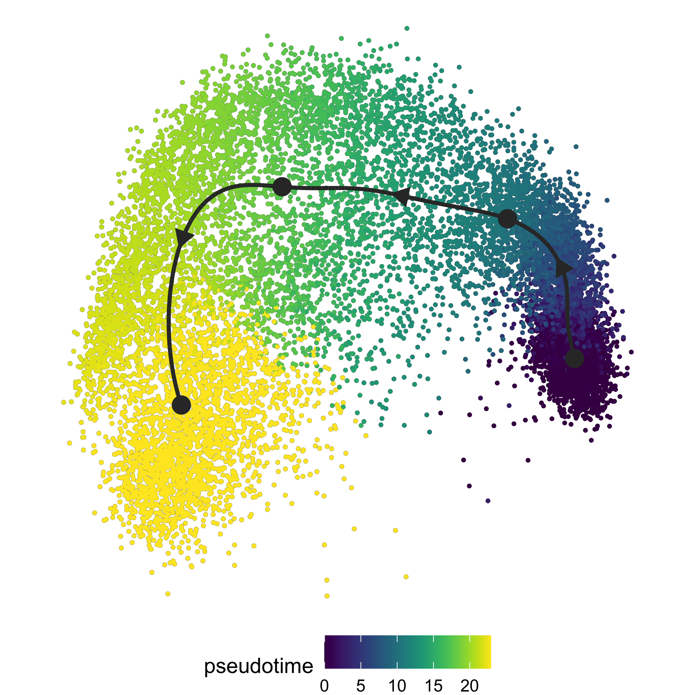
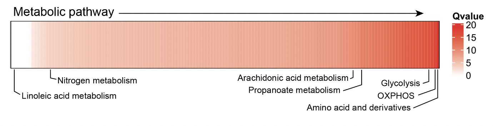
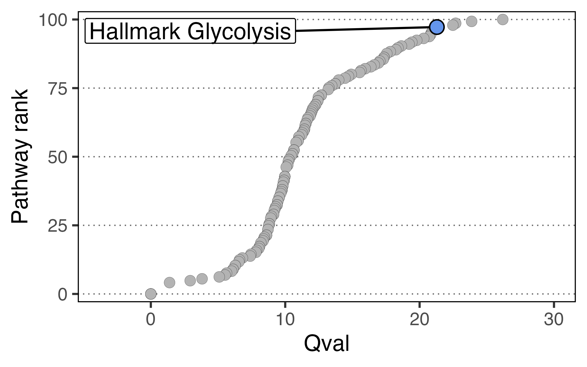

Multisample analysis with SCPA
Multisample analysis can be performed with SCPA, meaning you can test pathway activity over multiple populations. This may be useful if you have multiple time points, or a pseudotime trajectory. The principle is the same as a two group comparison, but you just need to supply more populations. For example, if you have three time points, you would run:
scpa_out <- compare_pathways(samples = list(pop1, pop2, pop3),
pathways = pathways)Comparing pathways across pseudotime with SCPA
Here we’re going to look at tracking gene set changes across a pseudotime trajectory, using the multisample capability of SCPA. To do this, we’ll use a dataset that we generated where naive CD4+ T cells were left unstimulated, or stimulated for 12 or 24 hours with anti-CD3 and anti-CD28. You can find this dataset here, and this analysis will replicate Figure 4 from our paper. We’ll do a systematic analysis of how metabolic pathways are transcriptionally regulated throughout naive CD4+ T cell activation.
Let’s load in a few packages to start
library(SCPA)
library(Seurat)
library(tidyverse)
library(magrittr)
library(dyno)
library(ComplexHeatmap)
library(circlize)Load in data
naive_cd4 <- readRDS("naive_cd4.rds")Quick look at the data
We can see that the populations include both naive/activated T cells, and Tregs
DimPlot(naive_cd4, split.by = "Hour")
Filter out cells we don’t want
We’ll get rid of the Tregs because we’re just interested in naive T cell activation in the non Treg populations
naive_cd4 <- subset(naive_cd4, idents = "Treg", invert = T)Model trajectory using the dyno workflow
We’ll then take the top 1000 most variable genes to model a trajectory
df <- as.matrix(naive_cd4[["RNA"]]@data)
var_genes <- names(sort(apply(df, 1, var), decreasing = TRUE))[1:1000]And then these steps are broadly taken from the dyno vignettes.
We’re just taking expression data and adding it to the object so it’s
able to be used in the infer_trajectory function.
counts <- Matrix::t(as(as.matrix(naive_cd4@assays$RNA@counts[var_genes,]), 'sparseMatrix'))
expression <- Matrix::t(as(as.matrix(naive_cd4@assays$RNA@data[var_genes,]), 'sparseMatrix'))
dataset_n4 <- wrap_expression(expression = expression,
counts = counts)And finally running the infer_trajectory function using
slingshot as the modeller
model_n4 <- infer_trajectory(dataset_n4, method = ti_slingshot(), verbose = T)We can visualise the trajectory
plot_dimred(model_n4,
"pseudotime",
pseudotime = calculate_pseudotime(model_n4),
hex_cells = F,
plot_trajectory = T,
size_cells = 1, alpha_cells = 0.8) +
theme(aspect.ratio = 1)
Once we have our trajectory calculated, we can generate distinct
nodes of cells across the trajectory to use as an input for SCPA. To
generate the nodes, we can use the
group_onto_nearest_milestones function, which assigns each
cell to a node based on it’s pseudotime value.
We can then visualize the nodes that are calculated across the trajectory to see what we’re extracting
plot_dimred(model_n4,
grouping = group_onto_nearest_milestones(model_n4),
hex_cells = F,
plot_trajectory = T,
size_cells = 1, alpha_cells = 0.8) +
theme(aspect.ratio = 1)
And extract the cells based on this grouping
mile_group <- data.frame(group_onto_nearest_milestones(model_n4)) %>%
set_colnames("milestone") %>%
rownames_to_column("cell")Once we have the pseudotime groupings, we can add this information to the Seurat object.
naive_cd4$milestone <- mile_group$milestoneExtract expression data for the populations we’re comparing
We then need to extract expression matrices for all the cells across the distinct nodes, so we effectively have 4 populations across the trajectory. We can use these expression matrices to assess pathways across the 4 nodes.
We can loop the seurat_extract function to get
expression matrices for all cells in each population. If you have a
SingleCellExperiment object, you can use the sce_extract
function.
cd4_pseudo <- list()
for (i in 1:max(mile_group$milestone)) {
cd4_pseudo[[i]] <- seurat_extract(naive_cd4, meta1 = "milestone", value_meta1 = i)
}Define pathways and run comparison
Now all the hard work is done, we just need to give this information to SCPA to analyse pathways over pseudotime, after defining the pathways. Here we’re using a curated list of metabolic pathways taken from Hallmark, KEGG, and Reactome databases that you can find here
pathways <- "combined_metabolic_pathways.csv"
cd4_metabolism <- compare_pathways(samples = cd4_pseudo,
pathways = pathways)
# For faster analysis with parallel processing, use 'parallel = TRUE' and 'cores = x' argumentsPlot a global summary of the data
All done. Let’s plot the data (some annotations have been added later to highlight pathways)
cd4_metabolism <- cd4_metabolism %>%
data.frame() %>%
select(Pathway, qval) %>%
column_to_rownames("Pathway")
col_hm <- colorRamp2(colors = c("white", "red"), breaks = c(0, max(mstone_out)))
Heatmap(t(cd4_metabolism),
name = "Qvalue",
col = col_hm,
border = T,
rect_gp = gpar(col = "white", lwd = 0.1),
heatmap_height = unit(2, "cm"),
show_column_dend = F,
show_row_names = F,
show_column_names = F)
Highlight pathway by rank
We can also extract a single pathway to highlight its rank in the
analysis using the plot_rank function. There are lots of
glycolysis pathways near the top of the list, but we’ll just highlight
one.
plot_rank(scpa_out = cd4_metabolism,
pathway = "hallmark_gly",
base_point_size = 2.5,
highlight_point_size = 3)